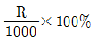
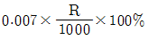
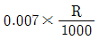
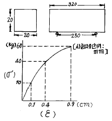
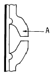
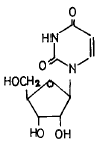
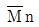
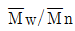
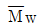
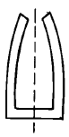

임산가공기사 (2003-08-10 기출문제)
1과목: 목재이학
1. 치환법에 의하여 구한 목재의 진비중은?
- 1.36
- 1.46
- 1.56
- 1.66
(정답률: 알수없음)

2. 목재의 진비중(眞比重)이란?
- 목재의 비중
- 세포의 비중
- 세포막 실질의 비중
- 목섬유의 비중
(정답률: 55%)
3. 목재의 비중을 측정하기 위한 시험편은 어느 온도 조건하에서 건조시키는 것이 가장 좋은가?
- 70 - 75℃
- 100 - 1⑤℃
- 270 - 275℃
- 300 - 3⑤℃
(정답률: 64%)
4. 증발계수의 단위는?
- g/cm2·hr
- g/cm·hr·%
- g/cm·hr·mmHg
- g/hr·cm2·℃
(정답률: 37%)
5. 다음 수종 중 건조가 가장 어려운 목재는?
- 소나무
- 단풍나무
- 나왕
- 참나무
(정답률: 50%)
6. 비중과 수축율의 관계에서 각 수종을 평균하여 볼 때 섬유방향의 수축률은 어떻게 표시하는가? (단, R: 용적밀도수 kg/m3 이다.)

- (0.0007 × R) × 100%


(정답률: 58%)
7. Apitong(아피톤)재의 판폭 10cm, 함수율 17% 의 천연 건조 상판을 마루로 깔 때 그 함수율이 14 % 로 변화하면 그 마루의 틈은 얼마쯤 생기겠는가? (단, 정확한 판목판이면 함수율 1 % 당 수축율은 0.34 % 이다.)
- 1.02 mm
- 2.10 mm
- 3.00 mm
- 3.52 mm
(정답률: 30%)
8. 함수율 15%인 목재의 비열(cal/g·℃)은 얼마인가?
- 0.312
- 0.412
- 0.512
- 0.612
(정답률: 32%)
9. 목재의 팽창과 수축을 최소한으로 줄이기 위한 방법 중 잘못된 것은 어느 것인가?
- 높은 온도로 처리한 나무를 사용한다.
- 될수만 있다면 가벼운 나무를 사용한다.
- 가급적 판목재를 사용한다.
- 수지처리한 나무를 사용한다.
(정답률: 50%)
10. 다음 항목 중 열확산율에 영향을 가장 덜 미치는 것은?
- 함수율
- 비열
- 밀도
- 온도
(정답률: 42%)
11. 온도 0 - 100℃범위에서 전건목재의 평균 비열은 얼마인가?
- 0.224 cal/g·℃
- 0.324 cal/g·℃
- 0.424 cal/g·℃
- 0.524 cal/g·℃
(정답률: 65%)
12. 탄성계수란?
- 변형계수의 역수이다.
- 변형계수이다.
- 변형도이다.
- 응력도이다.
(정답률: 50%)
13. 그림과 같은 시험제를 사용하여 굴곡강도 시험을 실시하여 다음과 같은 결과를 얻었다. 굴곡 영 계수(屈曲 young 係數)는?

- 31.3 × 103 [kg/cm2]
- 32.3 × 103 [kg/cm2]
- 33.3 × 103 [kg/cm2]
- 34.3 × 103 [kg/cm2]
(정답률: 알수없음)
14. 목재에 매우 안전하다고 생각되는 정도의 낮은 응력을 반복하여 연속작용시키면 장시간 후에는 파괴된다. 이와 같은 반복응력에 의하여 파괴를 생기게 하는 가장 작은 응력을 무엇이라 하는가?
- 탄성한도
- 비례한도
- 피로한도
- 항복점
(정답률: 64%)
15. 함수율 1% 변화당 휨 강도의 변화율(%)은 얼마인가?
- 1
- 2
- 4
- 8
(정답률: 28%)
16. 다음 목재의 강도 중에서 강도가 가장 작은 값을 나타내는 것은?
- 종압축강도
- 종인장강도
- 휨강도
- 전단강도
(정답률: 71%)
17. 목재의 유전율에 관한 설명 중 옳은 것은?
- 목재의 함수율이 높을수록 유전율은 커진다.
- 목재의 함수율이 높을수록 유전율은 작아진다.
- 목재의 함수율과 유전율은 무관하다.
- 전건상태에서 유전율은 가장 높다.
(정답률: 64%)
18. 음파가 목재에 진입하면 회절하는 데 그때의 음속은 공기중에서 보다 몇 배 정도 빨라지는가?
- 1/10배
- 3배
- 5배
- 10배
(정답률: 16%)
19. 시험재의 초기중량 1500g, 추정된 함수율 50% 일 때의 전건중량은?
- 1000 g
- 800 g
- 750 g
- 600 g
(정답률: 50%)
20. 목재의 광학적 성질에 대한 내용으로 맞지 않는 것은?
- 대부분의 재료는 입사광선에 대하여 선택적으로 어떤 파장을 흡수 또는 반사한다.
- 재료의 색은 그 표면에서 반사된 빛의 성질로만 결정되는 것이 아니다.
- 사람의 눈은 파장이 380nm에서 780nm사이의 빛만을 색으로 느낀다.
- 물체의 색을 나타내는 여러 표색계는 수식 또는 환산표에 의하여 서로 환산된다.
(정답률: 50%)
2과목: 목재해부학
21. 박막에피테리움 세포로 싸여 있는 침엽수 수지구에서 볼수 있는 특징은?
- 타일로 시스(Tyloses)
- 타일로 소이드(Tylosoid)
- 검물질
- 결정의 발달
(정답률: 알수없음)
22. 심재수에 속하는 수종은?
- 버드나무, 미류나무
- 너도밤나무, 단풍나무
- 목련, 오리나무
- 참나무, 물푸레나무
(정답률: 65%)
23. 다음 설명 중 일반적인 열대재의 특징이 아닌 것은?
- 취약심재를 갖고 있다.
- 교착목리가 많다.
- 대부분의 시장재는 환공재이다.
- 도관의 천공은 단일 천공이 많다.
(정답률: 55%)
24. 중문공(유연막공)의 구조를 그린 그림에서 A부분의 명칭은?

- 문공환(pit annulus)
- 문공강(pit cavity)
- 문공연(윤대:pit border)
- 문공구(pit canal)
(정답률: 알수없음)
25. 활엽수재의 식별 특징이 아닌 것은?
- 다실결정세포
- 주위상 유조직
- 방사가도관
- 격벽목섬유
(정답률: 50%)
26. 도관이나 가도관 기타 세포를 보기 위하여 목재를 분해시켜야 할 때가 있다. 다음 중 가장 빠른 방법은?
- 연화법
- 회상법
- 슐쩨법
- 제프레법
(정답률: 47%)
27. 다음 중 활엽수의 식별에 가장 중요한 특징이라고 생각되는 것은?
- 목섬유의 크기
- 방사가도관의 존재 유무
- 횡단면상의 도관 배열
- 방추형 방사조직
(정답률: 알수없음)
28. 마이크로피브릴 경사각은 목재의 수축 팽윤에 영향이 크다. 세포축에 대한 마이크로피브릴 경사각이 커지면 다음 중 목재의 어느 방향 수축팽윤이 가장 커지는가?
- 방사방향
- 접선방향
- 섬유방향
- 횡단방향
(정답률: 43%)
29. 교질섬유(gelatinous fiber)가 분포하는 재(材)는?
- 성숙재
- 압축응력재
- 인장응력재
- 미숙재
(정답률: 42%)
30. 환공재의 연륜폭이 넓어지면 비중의 변동은 어떻게 되는가?
- 감소한다
- 변화가 없다
- 증가한다.
- 세포길이에 따라 변한다
(정답률: 58%)
31. 분비세포(Secretory cell)는 박막의 대형세포로서 목재에 있는 상태는?
- 도관사이에 분재하고 있다.
- 분비세포만으로 집단을 이루워 단독으로 춘재부에만 산재하고 있다.
- 도관이나 가도관과 혼재하고 있다.
- 목부 모세포 사이에 분재하고 있다.
(정답률: 30%)
32. 수목의 비대 생장에 관계하는 조직은?
- 전분열조직
- 생장점
- 정단분열조직
- 형성층
(정답률: 알수없음)
33. 침엽수재 경단면의 직교분야에 나타나는 막공의 형태를 기술 한 것 중 옳지 않은 것은?
- 창상형 막공(Window like pitting)
- 소나무형 막공(Pinoid pitting)
- 삼나무형 막공(Taxodioid pitting)
- 사상형 막공(Sieve like pitting)
(정답률: 69%)
34. 목재가 터지는 현상 중에서 건조시킬 때 일어나는 현상이 아닌 것은?
- 마구리 할렬(end check)
- 심렬(heart check)
- 표면할
- 할렬
(정답률: 67%)
35. 침엽수재와 활엽수재의 가도관을 비교한 설명 중 틀린 것은?
- 활엽수재의 가도관이 침엽수재의 그 것보다 더 길다.
- 활엽수재 가도관의 벽공은 크기가 작다.
- 가도관은 활엽수 중에서는 일부 수종에서만 볼 수 있다.
- 활엽수재 가도관의 형태가 더 다양하다.
(정답률: 50%)
36. 침엽수에서 편심생장(ecentric growth)으로 형성 될 수 있는 이상재는?
- 압축 이상재
- 편심 이상재
- 인장 이상재
- 전단 이상재
(정답률: 알수없음)
37. 환공재로서 춘재부의 대형 관공은 1∼4열이며 추재부의 소형관공은 산재하고 심변재의 구별은 명확하며 심재는 선명한 적갈색 변재는 황백색을 띠고 나무갗은 거칠고 독특한 광택이 있는 수종은 다음 중 어떤 것인가?
- 가래나무
- 참중나무
- 신갈나무
- 아까시나무
(정답률: 37%)
38. 수선 유세포와 관계있는 것은?
- 촉단 방향으로 뻗쳐 있는 세포 요소이다.
- 횡적으로 양분을 공급한다.
- 박막 세포로 둘러싸여 있다.
- 목재의 수체를 지지하는 역할을 한다.
(정답률: 알수없음)
39. 마이크로피브릴의 배열이 10∼30° 의 각도를 가지며, 두께는 전체 세포막의 70∼80%를 점유하는 2차 세포막의 층은?
- P층
- S1층
- S2층
- S3층
(정답률: 알수없음)
40. 일반적으로 ray tissue에 있어서 침엽수가 쌍자엽식물과 다른 점은?
- 단열 방사선
- 3열 방사선
- 5열 방사선
- 다열 방사선
(정답률: 0%)
3과목: 목재화학
41. 침엽수재 hemicellulose 의 주체가 되는 물질은?
- glucomannan
- galactoxylan
- methylgluconoxylan
- arabinoglucose
(정답률: 55%)
42. Xylose를 12% HCl로 반응시켰을 때 생성되는 물질은?
- levulonic acid
- levuxylosan
- furfural
- Hydroxymethylfurfural
(정답률: 48%)
43. 목재펄프의 결정화도는 몇 % 인가?
- 56 %
- 66 %
- 76 %
- 86 %
(정답률: 53%)
44. 셀룰로오스 잔토겐산나트륨(Natrium Xanthoglenate) 제조시 용해용 펄프를 몇 %의 가성소다 용액에 침지시키는가?
- 8 %
- 18 %
- 28 %
- 38 %
(정답률: 70%)
45. 다음 중 Staudinger 의 점도법칙을 나타낸 것은?
- [η]= KMa
- [η] = KM × a
- [η] = KM + a
- [η] = KM - P
(정답률: 알수없음)
46. 다음 구조식의 물질 이름은?

- Uridine
- Guanosine
- Alanine
- Pyrimidine
(정답률: 75%)
47. 목재(木材)에서 탈(脫) Lignin 을 야기시키는 방법으로 염소 Monoethanolamine 법을 최초로 시도한 사람은?
- Freudenberg
- Timell
- Klason
- Masonite
(정답률: 30%)
48. 소나무 M W L의 △Ei Spectra 를 구하였더니 300nm에서의 시차 흡광계수 △aamx가 4.85ℓ·g-1·cm-1 이었다. 이 리그닌의 페놀성 수산기 함량은 얼마인가?
- 2.0 %
- 3.0 %
- 4.0 %
- 5.0 %
(정답률: 10%)
49. Cell-ONa + ClCH2COONa → Cell-OCH2COONa + NaCl 의 반응으로 생성되는 셀룰로오스의 유도체는?
- Carboxymethyl cellulose
- Hydroxyethyl cellulose
- Acethylpropionyl cellulose
- Cyanoethyl cellulose
(정답률: 50%)
50. 장뇌(Camphor)는 어디에서 얻어지는가?
- Abietie Acid
- α - Pinene
- P - Cimen
- P - thymine
(정답률: 63%)
51. 목재의 펜토산(pentosan)정량에 관련되는 성분은?
- galactoglucomannan
- glucomannan
- Holocellulose
- Xylan
(정답률: 42%)
52. 화학적으로 가장 안정된 목재의 성분은?
- 글루코오스
- 셀룰로오스
- 자일로오스
- 만노오스
(정답률: 75%)
53. 천연 Cellulose (CelluloseⅠ)의 결정구조 중 섬유축의 분자간의 배열은?
- 상호 180도 회전하여 배열하고 있다.
- 상호 90도 회전하여 배열하고 있다.
- 상호 동일 방향으로 배열하고 있다.
- 상호 반대 방향으로 배열하고 있다.
(정답률: 28%)
54. 목재 내의 Arabinogalactan 은 물로 용이하게 추출할 수 있다. 가장 큰 이유는?
- 저분자량 물질이므로
- 세포내강에 분포하므로
- 알칼리성을 띠므로
- 변재부에 주로 분포하므로
(정답률: 73%)
55. 셀룰로오스를 구성하는 글루코오스 한 분자에 존재하는 유리수산기(free hydroxyl group)의 수는?
- 1
- 2
- 3
- 4
(정답률: 62%)
56. 목재를 72% 황산으로 가수분해하여 얻어지는 리그닌은?
- 마쇄 리그닌
- 디옥산 리그닌
- 클라손 리그닌
- 퍼버스 리그닌
(정답률: 알수없음)
57. 점도법에 의한 섬유소(Cellulose)의 분자량이 497,800 이었다. 섬유소의 반복단량기(monomeric repeating unit)의 분자량이 162 라 할 때 이 섬유소의 중합도는?
- 약 1,000
- 약 2,000
- 약 3,000
- 약 4,000
(정답률: 46%)
58. α - 셀룰로오스의 필링오프(peeling-off)반응으로 생성되는 최종 안정산물은?
- 글루코오스(glucose)
- 글루쿠론산(glucuronic acid)
- 글루코사카린산(glucosaccharinic acid)
- 글루코이소사카린산(glucoisosaccharinic acid)
(정답률: 37%)
59. 중량 평균 분자량( )과 수평균 분자량(
)과 수평균 분자량(

)과의 비 (
)가 2.0인 섬유소의 수평균 분자량이 500,000 일 때, 중량 평균 분자량은? = 500,000
= 500,000
= 1,000,000 = 1,500,000
= 1,500,000 = 2,000,000
= 2,000,000
(정답률: 64%)
60. 알돈산(aldonic acid)에 대한 설명으로 옳지 않은 것은?
- 산소, 알칼리 처리한 셀룰로오스의 산 가수분해 시주로 생성된다.
- 알도오스(aldose)의 C1 탄소가 산화되어 카르복실기(-COOH)로 된 것을 뜻 한다.
- 알도오스(aldose)의 마지막 탄소(C5 혹은 C6)가 산화되어 카르복실로 된 것을 뜻한다.
- 알칼리에 의한 펄프제조 시 알돈산이 생성되면 peeling off반응이 억제 혹은 정지한다.
(정답률: 30%)
4과목: 임산제조학
61. 향나무의 목재에 1.5 ∼ 4 % 함유되어 있으며, 현미경유, 비누의 향료 등으로 사용되는 것은?
- 터펜틴유(turpentine oil)
- 장뇌
- 유지(fatty oil)
- 시더유(cedar oil)
(정답률: 67%)
62. cellulose가 산(HCl, H2SO4등)에 의하여 가수분해될 때 생성되는 당은?
- glucose
- xylose
- galactose
- mannose
(정답률: 알수없음)
63. 띠톱제재의 경우를 기술한 것 중 옳지 않은 것은? (단, D는 거치직경, L은 축간거리)
- 안정되고 좋은 능률을 내려면 L/D 값이 1에 가깝고 d가 큰 것이 좋다
- 보통 톱의 두께 t는 D의 1/1,000을 초과하지 않는다.
- 긴장응력은 현재 30kg/mm2가 표준으로 되어 있다.
- 보통 하부거차를 구동시키는데 톱은 보통 40-50m/s의 주속도로 주행한다.
(정답률: 20%)
64. 목재건조에 있어서 절형시편(prong test piece)이 그림과 같이 변형하면 어떻게 된 것인가?

- 콜랩스(collapse)가 형성된 것이다.
- 표면경화가 형성된 것이다.
- 내부압축응력을 표시한다.
- 내부인장응력을 표시한다.
(정답률: 25%)
65. 치단각(齒端角)을 50° 로 할 때 만재소요 동력이 최소로 되는 것은?
- 치배각 0°, 치후각 40°
- 치배각 20°, 치후각 20°
- 치배각 40°, 치후각 0°
- 치배각 60°, 치후각 -20°
(정답률: 50%)
66. 목재접착시 일반적으로 사용되고 있는 목질재료의 적정 함수율은?
- 2 - 5 %
- 8 - 15 %
- 20 - 25 %
- 25 - 28 %
(정답률: 72%)
67. 합판 제조시 압력은 어떤 것에 따라 주로 결정되는가?
- 접착제
- 단판비중
- 압체온도
- 단판 함수율
(정답률: 37%)
68. particle board 제조에 있어서 원료재의 비중이 0.4 - 0.6의 것이 가장 적합한 이유는?
- 열압 접착에 적합하다.
- 제품의 강도가 우수하다.
- 칩생산을 위한 기계절삭에 적합하다.
- 칩건조가 용이하다.
(정답률: 37%)
69. 다음 중 희산법(묽은산 가수분해법)이 아닌 것은?
- Madison법
- Inventa사법
- Peoria법
- 소련법
(정답률: 알수없음)
70. 항율건조기간과 감율건조기간의 경계가 되는 함수율은?
- 이용함수율
- 평형함수율
- 자유함수율
- 추천함수율
(정답률: 80%)
71. 목재 접착제로서 필요한 조건이 안되는 것은?
- 유동성이어서는 안된다.
- 목재에 대하여 습윤성이어야 한다.
- 어느 정도 침투하는 성질을 지녀야 한다.
- 경화하여 고화(固化)되어야 한다.
(정답률: 37%)
72. 크라프트 증해액 중 Na2S의 역할을 올바르게 기술한 것은?
- 리그닌의 β - alylether의 개열 촉진
- 리그닌의 β - alylether의 개열 억제
- 리그닌의 α - alylether의 개열 촉진
- 리그닌의 α - alylether의 개열 억제
(정답률: 37%)
73. 합판의 제조공정 순서는?
- 조목 - 로우터리 절삭 - 건조 - 재단 - 조판 - 접착제 도포 - 냉압 - 열압 - 더불커트 - 마무리
- 조목 - 로우터리 절삭 - 재단 - 건조 - 접착제 도포 - 조판 - 냉압 - 열압 - 더불커트 - 마무리
- 조목 - 로우터리 절삭 - 재단 - 건조 - 조판 - 접착제 도포 - 냉압 - 열압 - 더불커트 - 마무리
- 조목 - 로우터리 절삭 - 건조 - 재단 - 접착제 도포 - 열압 - 냉압 - 더불커트 - 마무리
(정답률: 22%)
74. Cellulase 의 평균 분자량은?
- 600달톤
- 30달톤
- 60,000달톤
- 300달톤
(정답률: 22%)
75. 합판 프레스(press)의 압력 조절시 직경 500 mm 면적 0.196m2의 램(Ram) 1본으로 1m × 2m 크기의 합판에 14.5kg/cm2의 압력을 줄려고 할 때 유압 펌프의 게이지(gauge) 압력은?
- 135 kg/cm2
- 148 kg/cm2
- 156 kg/cm2
- 167 kg/cm2
(정답률: 59%)
76. 쇼퍼리글러 여수도 시험기로 농도 0.2%, 1000 mL의 지료를 측정한 결과 측관으로부터 배출된 수량이 550 mL였다면 이 지료의 여수도는?
- 35° SR
- 45° SR
- 55° SR
- 550° SR
(정답률: 55%)
77. 비중 0.45인 소나무재의 중성 아황산 반화학펄프 수율이 80 % 일 때 이 펄프 1톤 생산에 소요되는 원목은 몇 m3인가?
- 2.0
- 2.4
- 2.8
- 3.2
(정답률: 알수없음)
78. 건조실의 벽체에는 보온재를 사용한다. 다음 중 틀린 것은?
- 열 효율을 높이기 위해
- 온· 습도 조절을 하기 쉽기 때문에
- 건조의 습도가 저하하는 것을 방지하기 위하여
- 외기 온도의 영향을 방지하기 위하여
(정답률: 65%)
79. 신문용지의 충전제로 백토 또는 탄산칼슘을 첨가한다면 어느 정도 비율이 좋은가?
- 2 - 6%
- 10 - 20%
- 20 - 25%
- 25 - 40%
(정답률: 69%)
80. 백탄의 제조에 관한 기술 중 옳은 것은?
- 숯가마를 만들어 그 가마 밖에서 불을 꺼서 만든 것
- 숯가마를 만들어 그 가마 안에서 불을 끈 것
- 퇴적한 숯가마에서 만든 것
- 숯가마를 만들어 그 안에서 고온도로 구은 것
(정답률: 19%)
5과목: 목재보존학
81. 목재의 열화원인을 바르게 설명한 것은 어느 것인가?
- 미생물에 의한 열화를 주로 의미한다.
- 곤충 및 미생물에 의한 것만을 의미한다.
- 생물, 열, 기상, 기계, 화학, 건조열화 등을 모두 포함한다.
- 열 및 생물에 의한 열화를 의미한다.
(정답률: 알수없음)
82. 연부후균(soft rot fungi)에 대한 설명 중 가장 관계가 적은 것은?
- Chaetomium 속에 많이 포함되어 있다.
- 생육온도와 pH의 범위가 다른 균류에 비해 넓다.
- 담자균보다 강한 부후능력을 갖고 있다.
- 함수율 100∼200 % 의 범위에서 생육할 수 있다.
(정답률: 57%)
83. 목재 부후가 진행되면 세포막 구성 성분이 분해되기 시작하고 이들의 변화는 부후균의 종류에 따라 다르지만 대체로 어떠한 형으로 나눌수 있는가?
- 갈색부후, 백색부후, 연부후
- 녹색부후, 갈색부후, 백색부후
- 청색부후, 녹색부후, 전전재유사 부후
- 녹색부후, 백색부후, 전전재유사 부후
(정답률: 55%)
84. ZnCl2로 방부처리시 철의 부식을 방지하지 위하여 첨가하는 약제는?
- 중크롬산칼륨
- 플루오르화칼륨
- 아비산
- 황산동
(정답률: 20%)
85. WPC의 전건중량이 50g이고 소재의 전건중량이 40g이면 고분자 함침량(Polymer Loading)은 얼마인가?
- 10%
- 20%
- 25%
- 50%
(정답률: 28%)
86. 박피하지 않는 생재상태에서 목재를 벌채현장에서 보존처리시키는 방법으로 적당한 것은?
- 부세리(Boucherie)법
- 오스모스법
- 확산법
- 충세포법
(정답률: 39%)
87. 목재의 연부후와 관계있는 것은?
- 불완전균
- 백색부후균
- 갈색부후균
- 담자균
(정답률: 42%)
88. 치수안정을 위한 열안정화처리에 관한 설명 중 틀린 것은?
- 목재는 활성기인 -OH 때문에 흡습성이 생긴다.
- 열처리는 헤미셀룰로오스를 분해하여 물에 불용성인 중합체를 형성한다.
- 열처리는 피리딘용액에도 안정하다.
- 열처리재는 강도가 약해지고 변색된다.
(정답률: 25%)
89. 일반적으로 처리재에 압력을 가하여 약제를 침투시킬 때 침투 속도가 경시적으로 감소하는데 압력을 흐르는 방향과 반대로 맨처음과 같은 수준으로 침투속도가 증가되는 원리와 관계있는 공법은?
- 교체 가압 처리법
- 복식진공 처리법
- 셀론법
- 보울톤법
(정답률: 알수없음)
90. 포름알데히드 증기처리에 의한 4.2% 영구중량 증가가 되었다면 항수축효능은 얼마인가?
- 50 %
- 60 %
- 70 %
- 80 %
(정답률: 16%)
91. 주입된 수지액을 중합, 경화시키는 방법은 방사선을 이용하는 조사중합법과 촉매가열법의 화학중합법이 있다. 이 두 방법의 특징이 잘못 기술된 것은?
- 방사선조사법은 단면이 큰나무를 균일하게 처리할 수 있다.
- 방사선조사법은 침투도가 작다.
- 촉매가열법은 목재내부에 열이 가득차기 쉽다.
- 촉매가열법은 수지액의 가사시간이 짧다.
(정답률: 37%)
92. 목질재료의 치수안정화 방법 중 직교적층에 의한 효과가 가장 높은 재료는?
- 섬유판
- 삭편판
- 합판
- 집성재
(정답률: 47%)
93. 목재부후균이 발생할 수 없는 함수율은?
- 15%
- 30%
- 50%
- 70%
(정답률: 67%)
94. 목재 부후균의 자실체(子實體)가 표면에 나타나는 시기는 다음 중 어느 때인가?
- 초기
- 중기
- 말기
- 부후 전 기간
(정답률: 알수없음)
95. 금속화목재(metalized wood)란?
- 목재의 표면에 Sn을 피복처리한 것이다.
- 목재의 공극내에 합금을 용해, 주입시켜 고화한 것이다.
- 목재의 공극내에 Bi 50% + Al 31.2% + Sn 20%를 용해 주입시켜 냉각 고화한 것이다.
- 목재의 표면에 Bi 50% + Pb 31.2% + Sn 18.8%를 용해시켜 피복처리한 개질 목재이다.
(정답률: 40%)
96. 다음 방부처리 방법 중 상압식 주입법이 아닌 것은?
- 도포법
- 분무법
- 온냉욕법
- 충세포법
(정답률: 42%)
97. 곰팡이(mold)류의 침입으로 목재가 받는 가장 큰 영향은?
- 압축강도
- 변색
- 비중
- 수축팽윤
(정답률: 71%)
98. 다음 중 혼합방화약제가 아닌 것은?
- 타날리스
- 크롬화 염화아연
- 미날리스
- 피레소오트
(정답률: 24%)
99. 단일 방화제가 아닌 것은?
- 인산제일암모늄
- 인산제이암모늄
- 탄산나트륨
- 미날리스(Minalith)
(정답률: 54%)
100. 약제처리에 의한 목재의 방화작용은 다음과 같은 것으로 요약될 수 있다. 이들 중 방화 작용에 해당하지 않는 것은 어느 것인가?
- 흡수작용
- 가스작용
- 피복작용
- 열작용
(정답률: 34%)
- 치환법: 1.5 + (0.1 × 0.8) = 1.58
- 보기에서 가장 가까운 값: 1.46
치환법은 실제 값과 근사값의 차이를 줄이기 위해 사용되는 방법이다. 이 문제에서는 1.5와 0.1 × 0.8을 더한 값을 구한 후, 이 값과 가장 가까운 보기를 선택하면 된다. 따라서, 보기에서 가장 가까운 값은 1.46이다.